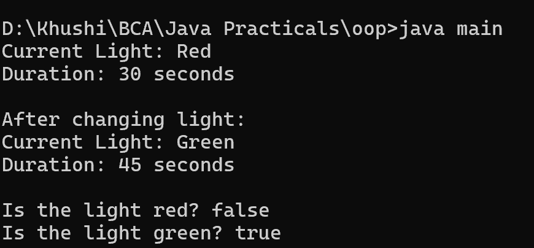

8. Write a Java program to create class called "TrafficLight" with attributes for color and duration, and methods to change the color and check for red or green.
class main {
public static void main(String[] args) {
TrafficLight trafficLight = new TrafficLight("Red", 30);
System.out.println("Current Light: " + trafficLight.getColor());
System.out.println("Duration: " + trafficLight.getDuration() + " seconds");
trafficLight.changeColor("Green", 45);
System.out.println("\nAfter changing light:");
System.out.println("Current Light: " + trafficLight.getColor());
System.out.println("Duration: " + trafficLight.getDuration() + " seconds");
System.out.println("\nIs the light red? " + trafficLight.isRed());
System.out.println("Is the light green? " + trafficLight.isGreen());
}
}
class TrafficLight {
private String color;
private int duration;
public TrafficLight(String color, int duration) {
this.color = color;
this.duration = duration;
}
public String getColor() {
return color;
}
public int getDuration() {
return duration;
}
public void changeColor(String newColor, int newDuration) {
color = newColor;
duration = newDuration;
}
public boolean isRed() {
return color.equals("Red");
}
public boolean isGreen() {
return color.equals("Green");
}
}
